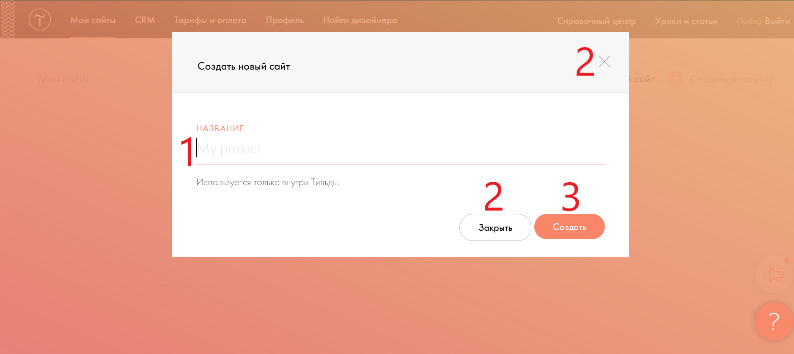

Создание страницы сайта

После входа на сайт первое,что вас встретит на нём - это окно. Введите в поле "Название" (1) имя проекта и нажмите кнопку "Создать" (3). Оно будет видно только вам и не является ни названием сайта,ни его адрессом.Если вы хотите закрыть это окно то нажмите на кнопки (2), закрывающие его (Для дальнейших инструкций нажмите на стрелочку в правой области экрана)
Создание первой страницы(2)

Если вы закрыли предыдущее окно, то нажмите на кнопку "Создать новую страницу" (2). У вас откроется такое же окно,как на предыдущей фотографии. Если вы нажмёте на кнопку "Настройки сайта" (2), то у вас откроется другое окно. Если вы хотите подробней узнать о этом выберите в "Cпиcок тем" тему - "Настройки сайта". Кнопка (3) открывает блог. Кнопка (4) открывает Справочный центр,где вы можете найти интересующую вас информацию по Тильде. Кнопка(5) перенаправляет на страницу с подключением домена, но на бесплатном тарифе эта функция не работает.(Для дальнейших инструкций нажмите на стрелочку в правой области экрана)